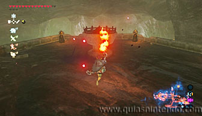

Puedes entrar en este santuario desde que llegas a la región de la torre de la llanura. Está en el Embarcadero, una zona que se encuentra ya dentro del Castillo de Hyrule. Para localizarlo ve a la zona noroeste del castillo y verás una entrada en la pared, tras el foso. Mira la localización exacta en las siguientes fotos.
Para llegar hasta allí puedes usar los bloques de hielo.

Después tienes que entrar por esa entrada que has visto a lo lejos (encuentras un kolog nada más llegas a esa zona). Ten en cuenta que donde debes entrar no es donde se encuentra el pequeño muelle de madera y la rampa que sube, sino enfrente de ellos, una entrada que te lleva bajo el castillo. Aunque parezca que no hay camino, puedes planear para encontrar el camino un poco más adelante (o seguir creando bloques de hielo por el agua).
Así es como entras en el embarcadero. Vas a encontrar varios enemigos nada más entrar en él, así que ve con cuidado. Después sube las escaleras que hay junto a la pared para alcanzar la parte más alta del embarcadero.
Allí encuentras un gran pebetero apagado rodeado de otros más pequeños que sí están encendidos. Simplemente lleva el fuego al pebetero grande para lograr que aparezca el santuario.

Dentro de él, debes derrotar a un miniguardián 4.0. Es el más poderoso de los miniguardianes que vas a encontrar en los santuarios de esta zona.
Después de derrotarlo dirígete al altar y en el camino podrás abrir un cofre que contiene una Espada de fuego. Cuando llegues al altar podrás examinarlo para obtener un símbolo de valía.